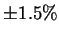
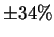
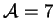
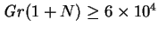
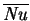
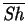
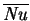
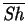

The sole experimental study of the unsaturated cavity that I was
able to identify is that of Wee et al. (1989)--other studies
(Hu & El-Wakil 1974; Weaver & Viskanta 1991c; Rosenberger et al. 1997; reviewed in §§3.3.2, 3.3.14,
3.3.18) used saturated boundary
conditions. Wee et al. dealt with very dilute concentrations of the vapour
(less than 750Pa partial pressure, or
0.5% by mass at 1atm). In tropical climates, the water vapour mass
fraction can be an order of magnitude higher so that the finite mass transfer
rate effects of wall interfacial velocity and species interdiffusion may become
appreciable. This is because, as evident from the basic equations of
chapter 2 or the narrow cavity limiting solution of
chapter 4, these effects depend on the mass transfer rate factor,
 , which (for fixed vapour mass fraction difference,
, which (for fixed vapour mass fraction difference,  )
is an increasing function of the reference vapour mass fraction (see the
definition: equation 2.33). Of course, higher temperatures also
make larger mass fraction differences possible.
)
is an increasing function of the reference vapour mass fraction (see the
definition: equation 2.33). Of course, higher temperatures also
make larger mass fraction differences possible.
Wee et al. attempted to impose the type of boundary conditions considered in §2.5: uniform temperature and vapour mass fraction on the hot and cold walls, but had great difficulty with the mass transfer boundary conditions. This was a result of the apparatus they used (Keey & Wee 1985; §3.3.6). They estimated that, although they were able to measure the vapour transfer rate to within , the uncertainty of the mean Sherwood number was up to . As well as the uncertainty of the value of the vapour mass fraction at the hot and cold walls, there was no way of determining its uniformity. An alternative idea for controlling the humidity at the boundary, using semipermeable membranes has been discussed elsewhere (McBain, Close, Suehrcke, Harris & Brandemuehl 1998; Hill 1998).
They also simulated their experiments with plane numerical solutions.
The measured quantities were the overall transfer rates. They used
Schmidt's (1929; §3.1) idea of correlating the
results with a combined Grashof number based on a simple addition of
buoyancy forces,
 . This worked well for both vapour and
energy transfer rates; the agreement between experiment and numerical
solution being well within the experimental uncertainty. This is
another reason for the use of this combined Grashof number in the
present work.
. This worked well for both vapour and
energy transfer rates; the agreement between experiment and numerical
solution being well within the experimental uncertainty. This is
another reason for the use of this combined Grashof number in the
present work.
Wee et al. also studied cavities with horizontal hot and cold walls.
The vertical cavities considered had , and so are taller than many of those studied in chapter 5, for which a fully developed region is to be expected sufficiently far from the floor and ceiling, but the combined Grashof numbers employed,  were such that could not be considered narrow; thus, no runs pertained to the conduction-diffusion regime, as defined in chapter 5. Instead, thermal and solutal boundary layers formed on the hot and cold walls, and the core was stratified.
Since Wee et al. did not consider the conduction-diffusion regime,
high mass transfer rates or three-dimensional effects, their results are not
directly comparable with those obtained here. Of course, the test cavity
must have had a finite span,
 , but it is not mentioned by Wee et al. or Keey and Wee (1985). The only measured quantities were the overall
transfer rates, so it is difficult to say what role the third dimension may
have played; the spanwise aspect ratio may well have been sufficiently large
for
, but it is not mentioned by Wee et al. or Keey and Wee (1985). The only measured quantities were the overall
transfer rates, so it is difficult to say what role the third dimension may
have played; the spanwise aspect ratio may well have been sufficiently large
for  not to have affected
 or
. This
topic is discussed in more detail in §7.1.
not to have affected
 or
. This
topic is discussed in more detail in §7.1.